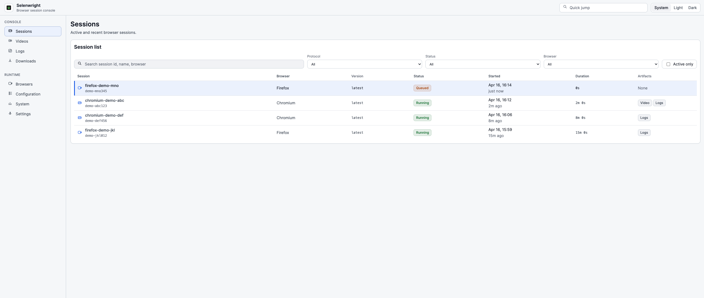

This reference covers version: v1.0.4
Selenwright UI is the operator console for Selenwright — a browser automation grid with native Selenium WebDriver and Playwright WebSocket support.
It is a Vue frontend served by a small Node.js HTTP proxy that forwards /api/*, SSE, and WebSocket traffic to the upstream Selenwright service.
Please refer to the GitHub repository if you need source code.
1. Getting Started
Three entry points depending on what you have:
-
Quick Start Guide — you have Docker and want to see the UI against a real upstream in under five minutes. Runs the combined
selenwright+selenwright-uistack. -
Running Locally — you cloned this repo and want
npm run dev. Covers the dev harness, pointing at a custom upstream, demo mode, and the test commands. -
FAQ — things people hit in the first hour: empty sessions list, VNC not opening, live logs stuck reconnecting, how session termination differs for Selenium vs Playwright.
2. Quick Start Guide
The fastest way to try Selenwright UI is the combined stack that also launches the upstream Selenwright grid. You need a machine with Docker and the Docker Compose plugin.
2.1. Start the stack
Clone the parent repository (which ships a ready-to-run docker-compose.yml) and bring it up:
git clone https://github.com/aqa-alex/selenwright.git
cd selenwright
docker compose up -dThis starts three services on the selenwright-net Docker network:
| Service | Role | Host port |
|---|---|---|
|
Go grid orchestrator (Selenium + Playwright) |
|
|
This operator console |
|
|
Per-session video capture |
internal |
Open http://localhost:4173 in a browser.
2.2. Log in
The shipped compose file runs the upstream with -auth-mode=embedded and an htpasswd user database. Sign in with a user from selenwright/config/users.htpasswd; users listed in -admin-users (default admin) see the full admin surface.
See Authentication for the other auth modes (none, trusted-proxy) and how the UI maps identity onto the navigation.
2.3. Issue tokens to your team
Once you’re signed in as an admin, go to Settings → API Tokens to mint a bearer token for each Playwright/Selenium runner or teammate. Pick the owner from the dropdown, give the token a human-readable name (e.g. laptop-alice, ci-runner), and copy the plaintext from the modal — it is shown once. Hand it over through a secret manager, not chat. Revocation lives on the same page (single token or bulk by owner, useful for offboarding).
2.4. What you should see
-
Sessions — the default page. Empty until you start a session.
-
Videos / Logs / Downloads — populate as sessions finish (subject to the retention window).
-
Browsers / Configuration / System / Settings — runtime state of the upstream.
Start a Selenium or Playwright session against http://localhost:4444 from your test runner to see it appear live.
2.5. Run the UI without the upstream
If you only want to look around the UI, run it in demo mode — it serves a built-in fixture dataset without contacting an upstream:
docker run --rm -p 4173:4173 \
-e HOST=0.0.0.0 \
-e DEMO_MODE=true \
selenwright-ui:latestSee Running Locally for the npm equivalent.
3. Running Locally
For development, clone the repo and start the dev harness:
git clone https://github.com/aqa-alex/selenwright-ui.git
cd selenwright-ui
npm install
npm run devThis spawns two processes via scripts/dev.mjs:
-
Vite dev server on
http://127.0.0.1:4173— HMR forsrc/and the two HTML entrypoints (index.html,vnc.html). -
API process (
server.mjsin API-only mode) on:4174— Vite proxies every/api/*request, SSE stream and WebSocket upgrade to it, so the Vue app talks to a single origin just like in production.
3.1. Pointing at an upstream
By default the API process targets http://127.0.0.1:4444. Point it somewhere else with SELENWRIGHT_TARGET:
SELENWRIGHT_TARGET=http://selenwright.internal:4444 npm run devIf the target is unreachable the snapshot endpoints return ok: false entries — the UI stays usable, just empty.
3.2. Demo mode (no upstream)
Run the UI against a built-in fixture dataset:
npm run dev:api # DEMO_MODE=true node server.mjs
# in another terminal:
npm run dev:viteOr with a single process pointing Vite at the API:
DEMO_MODE=true npm run devDemo mode serves fabricated sessions, artefacts and catalogue so navigation, filters and drawers all work offline. It is also what Playwright visual snapshots run against.
3.3. Common scripts
| Script | What it does |
|---|---|
|
Dev harness: Vite + |
|
Vite only — assumes you run the API elsewhere |
|
|
|
Production Vite build to |
|
Serve built |
|
|
|
ESLint over |
|
Vitest |
|
Playwright e2e + visual regression |
|
Full gate: format + typecheck + unit + e2e |
See Environment Variables for the full set of SELENWRIGHT_* env vars that server.mjs honours.
4. FAQ
4.1. Why is the Sessions page empty?
The UI is a pure client of the upstream Selenwright service. If the Sessions page is empty, the upstream has no sessions yet. Start one from your test runner (Selenium or Playwright) pointing at the upstream and it will appear within one snapshot tick (default 3s).
If the page shows "upstream unavailable" banners instead, the Node proxy cannot reach SELENWRIGHT_TARGET — check the target URL, firewall, and that the upstream is running.
4.2. Why can’t I open the VNC view?
Two common causes:
-
VNC not enabled on the session. The upstream only opens a VNC port when the session was started with VNC on. The knob is protocol-specific:
-
Selenium — pass capability
enableVNC: true(or"selenwright:options": { "enableVNC": true }) on session create. -
Playwright — append
?enableVNC=trueto the connection URL (e.g.ws://selenwright:4444/playwright/chromium?enableVNC=true). -
Server default — start the upstream with
-default-enable-vnc=trueand VNC is on unless the client explicitly turns it off the same way (enableVNC: falseor?enableVNC=false). + Sessions without VNC show a "VNC unavailable" placeholder.
-
-
WebSocket Origin rejected. If you front the UI with a reverse proxy, the proxy must forward the
Originheader intact and the origin must match either theHostheader or an entry inSELENWRIGHT_ALLOWED_ORIGINS. See Deployment Security.
4.3. Why are live logs stuck on "reconnecting"?
server.mjs opens a WebSocket to /logs/{sessionId} on the upstream and relays frames back to the browser as an SSE stream. If the upstream closes the socket, the UI retries with exponential backoff (1s, 2s, 4s, … capped at 30s, up to 6 attempts).
The most common cause is the session ending — the upstream closes the log stream. Check the session state; if it is Completed or Failed, switch to the saved log file in Logs.
4.4. How do I terminate a session?
Open the session detail panel (click a row on the Sessions page, or navigate to /sessions/{id}) and press Terminate. Works the same way for Selenium and Playwright sessions — the UI hides the protocol difference from you.
Who sees the button depends on the upstream’s auth mode:
-
Auth on (
embeddedortrusted-proxy) — admins see it on every session, regular users on their own sessions and on sessions owned by someone in one of their groups. -
Auth off (
-auth-mode=none) — everyone is effectively an admin, so anyone who can reach the UI can terminate any session. This is why anone-mode deployment must stay on a trusted network.
If the button is missing where you expect it, you either don’t have permission or the session has already finished. See Authentication.
4.5. How does this differ from Selenoid UI?
Selenwright UI is rewritten from scratch. What it adds over Selenoid UI:
-
First-class Playwright. Sessions list, session detail, and live log view all distinguish the protocol; terminate works for both.
-
Server-push snapshots. The console state (sessions, catalogue, system, artefacts index) is streamed over SSE every 3s instead of per-page polling.
-
Artefact retention and history. Integrates with the upstream
artifact-historyfeature — videos, logs and downloads persist past session lifetime. -
Runtime operations. Browser discovery (rescan, adopt, dismiss), stack pull/recreate, configuration snapshot, system health — all operable from the UI by admins.
5. Main Features
One section per UI page or user-visible feature. Each describes what the page shows, which upstream endpoints back it, filters and keyboard affordances, and edge cases worth knowing about.
The order below matches the left-nav order in the console itself: Sessions is the landing page, the artefact pages (Videos, Logs, Downloads) sit under the Console nav group, and the two live surfaces (Live View, Live Logs) are reached from an active session’s detail page.
6. Sessions
Route: /sessions.
The landing page. Every browser session that the upstream knows about — running, pending, queued, completed or failed — shows up here as one row per session.

6.1. Columns
| Column | Description |
|---|---|
Session |
Shortened session id. Click anywhere on the row (or press |
Protocol |
|
Browser |
Browser family + version as reported by the upstream capabilities. |
Status |
|
Started |
Start time, formatted per the Settings time preferences. |
Duration |
Live timer for active sessions, final duration for finished ones. |
Artefacts |
Small indicators for available video, logs and downloads. |
6.2. Filters and search
The toolbar above the table applies client-side filters — no round-trip to the upstream:
-
Search — free-text substring match over session id, browser, user.
-
Protocol —
All/Selenium/Playwright. -
Status — multi-select.
-
Browser — multi-select of browser families present in the current snapshot.
-
Active only — hide
Completed/Failedrows.
Filters are held in the sessions Pinia store and persist across page visits within a tab. They are not persisted to localStorage.
6.3. Keyboard navigation
The table is keyboard-first:
| Key | Action |
|---|---|
|
Move selection up / down the filtered rows |
|
Open session detail for the selected row |
|
Focus the global quick-jump input (anywhere in the UI — see Quick jump) |
Keys are only active when focus is outside an <input>, <textarea> or <select> — so a search box always wins. When focus is in the quick-jump input, Esc clears the query and Enter submits it.
7. Session detail
Route: /sessions/{session-id}.
Full-page view with everything the UI knows about one session. Deep-linking is supported: share a /sessions/abc-123 URL and any authenticated user who can see the session will land on the same view.
7.1. Header
-
Session display name + summary line.
-
Protocol badge (Selenium / Playwright).
-
Status badge (Running / Pending / Queued / Completed / Failed).
7.2. Action row
Three buttons:
| Button | Behavior |
|---|---|
Open VNC |
Opens |
Copy DevTools endpoint |
Visible only when the session exposes a DevTools endpoint. Copies the endpoint URL to the clipboard. |
Terminate |
Always rendered. Disabled when the session has already ended, or when the current user cannot manage it (tooltip: "You can only terminate your own sessions"). A browser confirm dialog runs before the destructive call; on success the page navigates back to the Sessions list. |
7.3. Overview panel
Key/value list with:
-
Session ID — full id, monospaced.
-
Protocol — badge (duplicate of the header badge, kept here for copy/paste convenience).
-
Browser — family + version.
-
Started — absolute timestamp, formatted per Settings.
-
Duration — live-counting for active sessions, final duration for finished ones.
-
Last activity — relative time since the last request to the upstream for this session.
-
Quota — the quota name the session was counted against (if any).
-
Artifacts — compact chips: Video, Logs, and a downloads chip labelled
DL Nwhere N is the number of captured files (e.g.DL 3). Shows None when nothing is attached.
7.4. Logs (side pane)
A Logs panel sits to the right of the main content. For active sessions it tails the upstream log stream live (see Live Logs); for finished sessions it renders the saved log file if one exists, with search and pagination.
Auto-scroll is on by default. Scrolling up pauses it; scrolling to the bottom (or pressing Jump to end) resumes.
7.5. Session termination
Covered by the Terminate button above. Works identically for Selenium and Playwright sessions (the upstream handles the protocol difference). Ownership rules:
-
Admins — can terminate any session.
-
Regular users — can terminate their own sessions, and any session owned by another user in one of their groups.
-
Auth mode
none— everyone is effectively admin.
See Authentication.
7.6. Relationship to artefacts
When a session ends the live log stream closes. The saved log file — if the upstream is configured to persist one — appears under Logs and replaces the live tail in the side pane. Videos and downloads follow the same pattern.
If artifact history is enabled (see Settings), the session detail view keeps its artefact links after the session is gone, for the configured retention window.
8. Live View
Entry point: /vnc.html?session={session-id}. Also embedded inline in the session detail panel for active sessions.
Selenwright UI ships a vendored noVNC client (vendor/novnc-client/, version-pinned) and a dedicated Vite entrypoint so the VNC viewer can open in a standalone browser tab or window without loading the full console bundle.
8.1. How it works
-
The browser opens a WebSocket to
wss://{ui-host}/api/vnc/{session-id}(orws://in HTTP deployments). -
server.mjsverifies theOriginheader (see Deployment Security) and opens a raw TCP socket to the upstream noVNC endpoint (/vnc/{session-id}onSELENWRIGHT_TARGET). -
Frames are piped bidirectionally until either side closes.
The proxy does not decode VNC frames — it is a byte-level WebSocket relay.
8.2. Enabling VNC on a session
VNC works identically for Selenium and Playwright sessions — the vnc.go proxy on the upstream is protocol-agnostic, it only looks at whether the session has a VNC host-port assigned at start time. What differs is how the client requests VNC at session-create time:
-
Selenium capability. Add
enableVNC: trueto the session capabilities — either top-level, or nested under the Selenoid-inheritedselenoid:optionsextension object. -
Playwright query parameter. Append
?enableVNC=trueto the WebSocket connection URL. The full path is/playwright/<browser>/<playwright-version>— for examplews://selenwright:4444/playwright/chromium/1.56.1?enableVNC=true. The upstream’splaywright.gohandler reads the query param and sets the samecaps.VNCflag the Selenium path uses. -
Server default. Start the upstream with
-default-enable-vnc=true(the shippeddocker-compose.ymldoes this) and VNC is on for every new session unless the client explicitly turns it off (enableVNC: falsecapability for Selenium,?enableVNC=falsefor Playwright).
Once enabled, the browser container exposes a VNC server and the UI can attach to it through /api/vnc/{session-id} — regardless of which protocol created the session.
8.3. Controls
The vendored noVNC client supports:
-
Scaling — viewer auto-fits by default; toggle remote-resize in the settings bar.
-
Clipboard — paste into the remote browser via the clipboard panel (the UI uses the upstream
/clipboard/{id}endpoint for this; it is protocol-agnostic). -
Full-screen — browser-native fullscreen button in the toolbar.
Keyboard focus: click into the VNC surface, then type. Esc exits the VNC pane and returns focus to the console.
8.4. Security
The VNC stream is as sensitive as screen-sharing with a live test — assume everything rendered in the browser is visible. Do not expose the UI on an untrusted interface without fronting it with an authenticating reverse proxy. See Deployment Security.
9. Live Logs
For every running session, the UI can tail the upstream’s per-session log stream in real time.
9.1. Transport
-
Browser → UI:
EventSource(Server-Sent Events) at/api/logs/live/{session-id}. -
UI → Upstream:
server.mjsopens a WebSocket to/logs/{session-id}onSELENWRIGHT_TARGETand relays frames. -
Each upstream WS text frame becomes one SSE
chunkevent. Control frames (status,shutdown) are also emitted.
SSE is used between the browser and the UI instead of a naive WS-to-WS proxy because:
-
EventSource reconnects are built-in and well-behaved across browsers.
-
SSE frames survive most reverse proxies that strangle generic WebSocket traffic.
-
The UI can attach/detach multiple viewers (e.g. several tabs on the same session) without coordinating WebSocket lifecycles.
9.2. Reconnect strategy
useLiveLog(sessionId) manages the lifecycle:
-
On
errorthe EventSource is closed and a reconnect is scheduled with exponential backoff: 1s → 2s → 4s → 8s → 16s → 30s (cap), up to 6 attempts. After that the stream stops and shows an "reconnection failed — reload to retry" affordance. -
A manual reconnect button resets the attempt counter.
-
When the session transitions to
Completed/Failed, the stream stops cleanly.
Log chunks are written into the console Pinia store with requestAnimationFrame debouncing to avoid layout thrash on very chatty sessions.
9.3. Autoscroll and pause-on-scroll
The log panel auto-scrolls to the newest line by default. Scrolling up anywhere in the panel pauses autoscroll — the panel stays where you left it so you can read. Scrolling back to the bottom (or pressing End) resumes.
9.4. What lines you see
The UI does not parse or filter the log stream — it is the upstream’s raw text, line by line. For Selenium the lines come from the browser container’s stdout/stderr; for Playwright they come from the Playwright server log.
If you need to search or page through a complete log, wait for the session to finish and open the saved log file from Logs (see Logs).
10. Artefacts
"Artefact" in Selenwright UI means any file a session produced that outlives the session: video recording, log file, or downloaded content. All three are listed on dedicated pages under the Console navigation group.
10.1. Drawer pattern
All three artefact pages use the same layout:
-
Left pane — dense filterable table of artefacts.
-
Right pane (drawer) — preview of the currently selected artefact. Width is user-adjustable (drag the splitter or use
←/→with the splitter focused) and persists inlocalStorage.
Selecting a row opens the drawer, deselecting collapses it.
10.2. Retention
By default the upstream does not delete artefacts — they accumulate under -video-output-dir / -log-output-dir / -downloads-output-dir.
Turn on artifact history (see Settings) to have the upstream rotate artefacts older than N days. The artefact pages show the current retention setting (e.g. "Retention: 7 days") so operators know the cliff date.
10.3. Filtering by session
The artefact pages share a single session filter. It is set by the Open saved log / Open logs button on the session detail Logs pane — clicking either navigates to the Logs artefact page filtered to that session. From there, switching to Videos or Downloads via the sidebar keeps the filter applied, so you can see everything produced by the same run.
While the filter is active, a Clear session filter button appears in the page header. The filter is in-memory UI state — it is not part of the URL and does not survive a full page reload.
11. Videos
Route: /artifacts/videos.
11.1. Table columns
| Column | Description |
|---|---|
Session |
Session id the video belongs to (if known from the filename or metadata). |
Browser |
Browser family + version. |
Protocol |
Selenium or Playwright. |
Size |
File size in human-readable units. |
Duration |
Only shown if the upstream reports it. |
Recorded |
Creation timestamp formatted per Settings. |
Rows are plain — no column sorting, no search, and no toolbar filter. The Actions column gives each row an Inspect button that opens the drawer. For narrowing the list to a single session see Filtering by session under Artefacts.
11.2. Drawer preview
Selecting a row opens a metadata inspector — the video itself is not embedded or streamed in the UI.
-
Key/value list: Session, Browser, Protocol, Created, Duration, Size.
-
Copy filename copies the filename to the clipboard.
11.3. Where videos come from
The upstream grid launches a companion container per session (-video-recorder-image=selenwright-video-recorder:latest in the shipped compose file) that records the browser’s VNC stream. Recording only happens when the session has enableVideo: true (capability) or the server is started with -default-enable-video=true. See the Selenwright docs for recorder configuration.
12. Logs
Route: /artifacts/logs.
Two kinds of logs end up here:
-
Saved log files — written by the upstream to
-log-output-dirafter a session ends. -
Live logs — the per-session stream for still-running sessions (documented separately in Live Logs).
The Logs page lists saved files. Open a running session’s detail view to see the live stream.
12.1. Table columns
| Column | Description |
|---|---|
Session |
Session id derived from the filename. |
Browser / Protocol |
As reported by the upstream log index. |
Size |
File size. |
Created |
File mtime. |
12.2. Drawer content
Selecting a row loads the full log file and renders it in the right pane with:
-
Per-line search. Case-insensitive substring match; filtered out lines stay counted so the "showing N of M" indicator is accurate.
-
Pagination. Very large log files are paginated on the client side — configurable lines-per-page in the toolbar.
-
Line anchors. Click a line number to get a shareable URL like
/artifacts/logs?file=foo.log#L1234. -
Copy as text. Copies the currently-filtered subset to clipboard.
12.3. Retention and privacy
Log files contain whatever the browser and driver write to stdout/stderr — which for driver-level errors can include page URLs, capability dictionaries, and occasionally secrets embedded in test code. Treat log files as sensitive and apply the same retention rules as the sessions themselves. See Settings for the artefact history knob.
13. Downloads
Route: /artifacts/downloads.
Files that a session downloaded from a website under test — captured from the browser’s download directory by the upstream. Useful for asserting "this report was generated", "the CSV has the right rows", or "the invoice PDF is not empty".
13.1. Table columns
| Column | Description |
|---|---|
Session |
Session id of the session that produced the file. |
Filename |
Relative path inside the session’s download directory. |
MIME |
Detected content type (from the upstream, not sniffed by the UI). |
Size |
File size. |
Downloaded |
When the file appeared in the browser’s download folder. |
13.2. Drawer content
Selecting a row previews the file in the drawer:
-
Text-like types (
text/*,application/json,application/xml) — rendered as monospace text with word-wrap toggle. -
Images — native
<img>preview with natural-size toggle. -
Everything else — "no preview available" placeholder with a download link.
Every row also offers a plain "download" link — the UI streams the raw bytes from the upstream with the artefact timeout applied per-chunk.
13.3. Session scoping
Each row’s Session column identifies the session that produced the file. See Filtering by session under Artefacts for how the shared session filter is set and cleared.
14. Operations
Pages that expose the upstream grid’s runtime state and — for administrators — a small set of mutating controls. These live under the Runtime nav group and are for operators, not for end users of the tests.
15. Browsers
Route: /browsers.
The inventory of browser images the upstream is configured to run.
15.1. Catalogue table
For each browser family the table shows:
-
Family —
chrome,chromium,firefox, etc. -
Versions — every version the upstream catalogue ships, one row each.
-
Image — Docker image reference (
selenwright-browsers/chrome:130style). -
Protocol support — Selenium, Playwright, or both.
-
Default — which version is used when a session does not pin a version.
Versions come from the upstream browsers.json config file (see the Selenwright docs for the file format).
15.2. Discovery
The upstream can scan Docker for browser images that are present on the host but not in browsers.json. The UI exposes three discovery actions:
| Action | Effect |
|---|---|
Rescan |
Upstream enumerates Docker images that match the expected label/naming convention and builds a list of candidates. |
Adopt |
Adds the selected candidate to |
Dismiss |
Hides the candidate from future listings without deleting the image. |
Discovery is admin-only. The UI hides the buttons for non-admins and the upstream re-enforces the check for anyone who tries to go around the UI.
16. Configuration
Route: /configuration.
Read-only view of the upstream’s runtime configuration snapshot. Nothing on this page mutates state — it is for operators asking "what flags is this upstream running with?" without SSH’ing into the host.
16.1. Sections
| Section | Content |
|---|---|
Identity |
Service version, build timestamp, commit hash (if the build embeds one). |
Listen |
Listen address, optional TLS certificate path, remote health-check path. |
Browser |
|
Artefact directories |
Video, log, download, artefact-history output paths. |
Timeouts and limits |
Session timeout, queue length, per-host concurrency cap. |
Integration |
Container network name, video recorder image, S3 upload flags, metadata tags. |
Feature flags |
|
Only the subset of flags the upstream explicitly exposes is shown. Flags that would leak secrets (e.g. htpasswd content, S3 credentials) are never included.
16.2. Refresh
The page re-reads configuration on every snapshot tick (default 3s) so a runtime reload of browsers.json or a hot-applied setting change shows up automatically.
16.3. Where to change things
Configuration here is read-only. The mutable settings (artefact history retention, stack pull/recreate) live under Settings. Everything else is set via the upstream’s CLI flags at start time — see the Selenwright CLI Flags reference.
16.4. Non-obvious fields
A few entries on this page read oddly at first glance. They are accurate — the UI just surfaces upstream state directly.
Log config, Container log driver, Container log options — all three reflect the upstream’s -log-conf <path> flag, which points at a JSON file describing the Docker log driver applied to browser containers (json-file, syslog, journald, awslogs, etc.). "Unavailable" means the upstream was started without that flag. This is the default and is fine unless your environment requires a specific log driver. The schema and examples live in Selenwright’s logging configuration file reference.
Effective log capture — this row answers the practical question "will logs be written for new sessions?". Log capture is gated by an OR across three sources: the -save-all-logs flag, the artifact history toggle under Settings, and a per-session enableLog capability. The field spells out which source is active (Enabled (via -save-all-logs) or Enabled (via artifact history)), or Opt-in (enableLog capability) when only the per-session capability can turn capture on. The raw -save-all-logs flag value is available in the Raw configuration block at the bottom of the page.
File upload — "Disabled" by default. Enabled with the upstream’s -enable-file-upload flag, and only needed when Selenwright proxies directly to driver binaries without Docker. Official Docker browser images already bundle the required shim, so most deployments leave this off. Selenwright’s File upload reference covers the endpoint contract.
17. System
Route: /system.
At-a-glance runtime health of the upstream grid.
17.1. Panels
| Panel | Content |
|---|---|
Readiness |
Overall boolean health flag plus a readiness message if the upstream provides one. |
Capacity |
|
Browser usage |
Breakdown of the |
Quota |
If the upstream has quotas configured, shows quota remaining per user/group. |
Health notes |
Any warning the upstream emits in its status payload (e.g. "Docker daemon unreachable", "artefact directory full"). |
17.2. What "pending" vs "queued" mean
-
Pending — the upstream accepted the session request and is starting the container. Usually sub-second.
-
Queued — the upstream could not start the container yet because
used == total(the-limitflag is saturated). The session waits, then promotes toPendingwhen a slot frees.
If queued is chronically non-zero, the grid is a capacity bottleneck. Options: raise -limit (if the host has capacity), scale out to another upstream, or reduce test concurrency.
17.3. Using this page as a dashboard
/system is deliberately dense and refreshes on every snapshot tick. It is the page to open on a wall display or the second monitor during a release. The UI is loopback-bound by default — to put it on a wall display, front it with an authenticating reverse proxy (see Deployment Security).
18. Settings
Route: /settings.
Two kinds of settings live here: local UI preferences (per-browser, stored in localStorage), and upstream operations (mutate state on the Go service). The page also includes a read-only view of the current data-source connection.
18.1. UI preferences
18.1.1. Theme mode
System (default) / Light / Dark. Applied via the data-theme attribute on <html>.
The theme is read from localStorage by an inline boot script in index.html before the main bundle loads, so there is no light-flash when you open a dark-themed page in a fresh tab. Picking "System" re-reads prefers-color-scheme on the fly.
18.1.2. Viewer behavior
Three independent preferences:
| Preference | Values |
|---|---|
Detail panels |
|
Timezone |
|
Time format |
|
All four preferences persist to localStorage under selenwright-ui.* keys; clearing site data resets everything to defaults.
18.2. Artifact history
Controls the upstream’s retention of videos, logs and downloads past session lifetime.
-
Retention mode —
Disabled/Enabled. -
Retention days — an integer between 1 and 365. The upstream removes artefact files older than this daily.
The panel shows the currently loaded backend value, lets you edit the draft, and saves on demand with a Save settings button. The button is disabled while there are no changes, and while a save is in flight. If the backend does not support artifact history (depends on the upstream build and flags), the panel shows why it is unavailable and disables the controls.
Saves are accepted from any user, but the upstream re-checks admin rights — non-admin callers get an error back.
18.3. Stack
Visible when the upstream reports it is running under Docker Compose.
-
Pull latest images — upstream runs
docker compose pullagainst its own stack. The result list shows, per service, whether the image was updated (with short image id) or is already up to date. -
Apply update — only enabled after a successful pull that reported updates. Upstream runs
docker compose up -d --force-recreate.
Both buttons are admin-only in the UI (disabled with an "Admin access required" tooltip for non-admins). Long-running: the UI tolerates up to 150s per action. Applying an update replaces the upstream container, which briefly drops the UI’s data stream — the page reconnects automatically when services are back.
This is the only way to update browser images without shell access to the host.
18.4. Connection
Read-only footer panel showing how this UI instance is wired to the upstream:
-
Data source —
Livewhen streaming real snapshots,demowhen running against the built-in fixture dataset (see Running Locally). -
Target — the upstream URL this UI is proxying to.
19. Security
Selenwright UI does not authenticate users on its own — it delegates identity to the upstream (three modes: none, embedded, trusted-proxy) and transport security to a reverse proxy in front of it. Read both sections before putting a Selenwright UI on anything wider than localhost.
20. Authentication
Selenwright UI does not authenticate users on its own. It asks the upstream "who am I?" and renders the UI accordingly — identity, admin flag, and group membership all come from the upstream.
The upstream supports three auth modes, selected with the -auth-mode flag on the Go service.
20.1. Auth mode: none
No authentication at all. The upstream reports everyone as authenticated and admin, so every visitor sees the full admin surface.
Use this only when the UI is on a trusted network that is already protected at a lower layer (tailscale, VPN, on-host only). Never expose a none-mode deployment to the public internet.
20.2. Auth mode: embedded
HTTP Basic against an htpasswd file owned by the upstream (-htpasswd=/etc/selenwright/users.htpasswd in the shipped compose file).
The user sees a login form at /login. Submitting valid credentials lands them on Sessions; invalid credentials get a clear error. The UI keeps the user signed in via an upstream-issued cookie, so a page refresh does not log them out. The header menu has a Log out item that clears the cookie and returns to the login form.
20.2.1. Admin users
The upstream -admin-users=user1,user2 flag lists admins. Admins get the full admin surface: browser discovery, stack management, artefact history editing, and terminate-any-session.
20.2.2. Groups
If the upstream associates users with groups (configurable via upstream flags — see the Selenwright auth docs), groups feed into ownership checks: a user can terminate any session owned by another member of the same group.
20.2.3. API tokens for machine clients
Humans log into the UI with an htpasswd password. Playwright, Selenium, and CI runners use bearer tokens instead — the UI never shows them the login form. An admin mints tokens on behalf of team members from Settings → API Tokens, then hands them over through a secret manager (1Password, Bitwarden, Keybase). Plaintext is shown once at creation time and then only stored as a bcrypt hash.
If a token is lost: the admin revokes it on the same page and creates a replacement. When a team member leaves, the admin filters the page by owner and revokes the whole batch in one action.
Tokens inherit the owner’s groups at creation time, so group-based session ACL continues to apply. The UI itself does not accept a pasted token in place of a password — the login form is always an htpasswd user/password pair.
20.3. Auth mode: trusted-proxy
The upstream trusts an identity header set by a reverse proxy in front of it. Useful for SSO integrations — the proxy does OIDC/SAML/Kerberos, then stamps a header like X-Forwarded-User and forwards the request.
The UI behaviour is the same as embedded from the user’s perspective: the page renders with your identity. There is no login form — if the proxy didn’t authenticate you, the UI shows an "authentication required" panel.
20.4. RBAC: who can do what
| Capability | Who |
|---|---|
See any session, session detail, artefacts |
All authenticated users |
Terminate any session |
Admins |
Terminate a session |
The session owner, or any user in one of the owner’s groups |
Browser discovery (rescan / adopt / dismiss) |
Admins |
Edit artefact history settings |
Admins |
Stack pull / recreate |
Admins |
Everything, under auth mode |
Everyone |
Ownership is resolved against the user and groups reported by the upstream — the UI only hides the button, the upstream is always the authority. Bypassing the UI (raw API calls, malicious extensions) does not grant extra permissions; every mutation is re-checked upstream.
20.5. Limitations
-
The UI enforces nothing on its own. Treat the UI’s hide-this-button as an ergonomic nicety, not a security boundary. The upstream is the authority.
-
No cookie domain trickery. The auth cookie is set on the upstream host. When UI and upstream share a public origin (because you put them behind the same reverse proxy) this works out of the box. If they are on different origins, you must set the cookie on a shared parent domain, or switch to
trusted-proxy. See Reverse Proxy.
21. Deployment Security
Selenwright UI is a proxy with no built-in authentication. Every production deployment must answer three questions:
-
Who can reach the HTTP port?
-
Who authenticates requests?
-
Is the WebSocket upgrade protected?
21.1. Bind address
server.mjs binds 127.0.0.1 by default (HOST environment variable). Running on loopback means nothing on the network can reach the UI unless you explicitly front it with a reverse proxy that listens on a real interface.
Setting HOST=0.0.0.0 on an untrusted interface exposes the full upstream API (and VNC, live logs, stack operations) with no authentication beyond what -auth-mode enforces upstream. If you do this, make sure -auth-mode is embedded or trusted-proxy, not none.
The Docker image flips the default to HOST=0.0.0.0 because a container’s loopback is its own container, not the host. Always publish the port only to a specific interface (-p 127.0.0.1:4173:4173) or run the container behind a reverse proxy.
21.2. Reverse proxy
The recommended topology is:
Browser ── TLS ── Reverse proxy (nginx/caddy/traefik) ── Selenwright UI ── Upstream
│
└─ SSO / basic auth / allowlistThe proxy terminates TLS, enforces authentication (SSO, IP allowlist, mTLS — whatever you already have), and forwards to the UI on loopback. The UI does not speak TLS itself.
See Reverse Proxy for concrete nginx and caddy configs.
21.3. WebSocket Origin check
The proxy opens real WebSocket upgrades for VNC (/api/vnc/) and live logs (/api/logs/live/). Browser clients send an Origin header on WS upgrades, and server.mjs rejects requests where:
-
Originis set but does not matchHost, AND -
Originis not inSELENWRIGHT_ALLOWED_ORIGINS.
Non-browser clients (CLI WS libraries, curl) that omit Origin are allowed through — the attack model is cross-origin browsers, not deliberate API consumers.
When you run behind a reverse proxy that presents a different public origin, set:
SELENWRIGHT_ALLOWED_ORIGINS=https://selenwright.example.comComma-separate multiple origins. Exact match only — no wildcards, no path segments.
21.4. Body size limits
SELENWRIGHT_MAX_BODY_BYTES caps request bodies (default 1 MiB). Oversize requests get 413 Request Too Large and never touch the upstream. The cap guards against someone hammering the proxy with huge POSTs.
21.5. SSE client cap
SELENWRIGHT_MAX_SSE_CLIENTS caps concurrent console-snapshot SSE subscribers (default 64). Over-cap gets 503 Retry-After: 5. Without this, a script opening thousands of SSE connections would hold memory for each.
21.6. WebSocket frame size caps
SELENWRIGHT_WS_MAX_FRAME_BYTES caps a single WS frame; SELENWRIGHT_WS_MAX_FRAGMENTED_BYTES caps the total size of a reassembled fragmented message (default 4 MiB). Over-cap closes the stream with WS code 1009. This prevents a misbehaving upstream from driving the proxy into unbounded memory.
21.7. Timeouts
-
SELENWRIGHT_UPSTREAM_TIMEOUT_MS— per-request timeout for/api/*(default 5000). -
SELENWRIGHT_ARTIFACT_TIMEOUT_MS— timeout for large artefact fetches (default 15000). -
SELENWRIGHT_TERMINATE_TIMEOUT_MS— session DELETE timeout (default 3000).
Timeouts produce 504 Upstream Timeout, not a hang.
21.8. Security headers
The UI sets these on every HTTP response:
-
Referrer-Policy: no-referrer -
X-Content-Type-Options: nosniff -
X-Frame-Options: SAMEORIGIN -
Content-Security-Policy(on HTML responses) —default-src 'self',frame-ancestors 'self',object-src 'none', etc.
If you need to embed the UI in an iframe from another origin you must set frame-ancestors upstream; the header is not user-configurable.
21.9. Session expiry
UI login sessions on the upstream are in-memory and cleared on every selenwright restart. When the server-side cookie becomes invalid (restart, TTL, explicit admin revocation), the UI catches the next 401 response from any data endpoint, drops the cached identity state, and bounces the browser to /login?reason=session_expired with a visible notice. This keeps the user from seeing a stale "logged-in" UI fed by open endpoints that the upstream no longer exposes (see the anonymous-reachable list in the selenwright authentication docs).
The unauthorized handler is wired in src/main.ts via setUnauthorizedHandler(…). Three paths are excluded from the trigger — /api/whoami, /api/login, /api/logout — to avoid a redirect loop during the auth bootstrap itself. Any other 401 from the proxy is treated as "session gone".
21.10. Checklist before going public
-
Terminate TLS at a reverse proxy.
-
HOSTon the UI container bound only to the proxy’s interface. -
SELENWRIGHT_ALLOWED_ORIGINScontains the public origin. -
Upstream
-auth-modeisembeddedortrusted-proxy. -
Admin users list is the minimum viable set.
-
Body and SSE caps left at defaults unless you have a reason.
-
/api/whoamireturnsauthenticated: truefor real users andauthenticated: falsefor anonymous ones — test both before announcing the URL. -
Hit
/api/statuswith no cookie and confirm401 Unauthorized. Until theopenPathsnarrowing in selenwright, this returned a populated sessions list to anyone on the network.
22. Configuration Reference
Complete list of knobs the Node proxy honours at startup, plus deployment recipes for Docker, Docker Compose, and the two most common reverse proxies (nginx and Caddy).
23. Environment Variables
All runtime knobs are environment variables read by server.mjs at startup.
23.1. Listen
| Variable | Default | Description |
|---|---|---|
|
|
Bind address. Loopback by default; Docker image overrides to |
|
|
Listen port. |
23.2. Upstream target
| Variable | Default | Description |
|---|---|---|
|
Upstream Selenwright service. Supports |
|
|
|
When |
|
|
When |
|
(auto) |
Override the directory served as static assets. Defaults to |
23.3. Origins and CORS
| Variable | Default | Description |
|---|---|---|
|
(empty) |
Comma-separated exact-match origins allowed on WebSocket upgrades in addition to |
23.4. Console snapshot stream
| Variable | Default | Description |
|---|---|---|
|
|
How often |
|
|
Hard cap on concurrent console-snapshot subscribers. Over-cap gets |
|
|
Max lifetime of a single SSE subscription before a graceful |
23.5. Timeouts
| Variable | Default | Description |
|---|---|---|
|
|
Per-request timeout for standard |
|
|
Per-chunk timeout for large artefact fetches (videos, log/download bytes). |
|
|
Timeout for |
The stack management routes (/api/stack/pull, /api/stack/recreate) use a hard-coded 150s timeout — those calls shell out to docker compose on the upstream host and need time.
23.6. Size caps
| Variable | Default | Description |
|---|---|---|
|
|
Max request body size. Over-cap gets |
|
|
Max size of a single WebSocket frame from the upstream. |
|
|
Max size of a reassembled fragmented WebSocket message. Over-cap closes the stream with code |
23.7. Examples
Typical production invocation behind a reverse proxy:
HOST=127.0.0.1 \
PORT=4173 \
SELENWRIGHT_TARGET=http://selenwright.internal:4444 \
SELENWRIGHT_ALLOWED_ORIGINS=https://selenwright.example.com \
node server.mjsDemo-only instance on a shared host:
DEMO_MODE=true \
HOST=0.0.0.0 \
PORT=4173 \
node server.mjs24. Docker
The UI ships as a single multi-stage Node 22 Alpine image. Build context is the repo root, Dockerfile at ./Dockerfile.
24.1. Prebuilt image
docker pull aqaalex/selenwright-ui:latest
docker run --rm -p 127.0.0.1:4173:4173 \
-e SELENWRIGHT_TARGET=http://host.docker.internal:4444 \
aqaalex/selenwright-ui:latestContainer defaults: HOST=0.0.0.0, PORT=4173. Publish to a specific host interface rather than 0.0.0.0 unless you have a reverse proxy in front.
Tags:
| Tag | Meaning |
|---|---|
|
Head of |
|
Most recent published release. Stable. |
|
Specific release. Immutable. |
24.2. Building locally
From the repo root:
docker build -t selenwright-ui:dev .Or use the convenience script that runs the test gate first:
bash build.sh24.3. Environment
All variables documented in Environment Variables work identically inside Docker. The two you will almost always set:
-
SELENWRIGHT_TARGET— upstream URL reachable from inside the container (use the container name on a shared network, e.g.http://selenwright:4444; orhttp://host.docker.internal:4444for Docker Desktop on macOS/Windows). -
SELENWRIGHT_ALLOWED_ORIGINS— public origin(s) the browser will use when hitting the UI through a reverse proxy.
24.4. Volumes
The image serves only built-in static assets and proxies /api/*. There is nothing to volume-mount. If you need to override assets, build your own image.
24.5. Health check
The image does not ship a HEALTHCHECK directive. A simple one you can add in compose or at docker run --health-cmd:
docker run --rm \
--health-cmd 'wget -qO- http://localhost:4173/ | head -c 1' \
--health-interval 10s \
-p 127.0.0.1:4173:4173 \
aqaalex/selenwright-ui:latestGET / always returns the SPA shell regardless of upstream state, so it is a liveness probe only. For readiness, hit /api/meta — it returns 200 with the target URL, or 200 with target: "demo" in demo mode.
25. Docker Compose
The recommended way to run Selenwright UI in production is in the same Compose stack as the upstream Go service.
25.1. Minimal stack
name: selenwright-stack
networks:
selenwright-net:
name: selenwright-net
services:
selenwright:
image: selenwright/hub:latest-release
container_name: selenwright
restart: unless-stopped
command:
- -listen=:4444
- -conf=/etc/selenwright/browsers.json
- -auth-mode=embedded
- -htpasswd=/etc/selenwright/users.htpasswd
- -admin-users=admin
- -default-enable-vnc=true
- -container-network=selenwright-net
ports:
- "4444:4444"
volumes:
- /var/run/docker.sock:/var/run/docker.sock
- ./selenwright/config:/etc/selenwright
- ./selenwright/state:/opt/selenwright/state
- ./selenwright/artifacts:/opt/selenwright/artifacts
- ./selenwright/logs:/opt/selenwright/logs
- ./selenwright/video:/opt/selenwright/video
networks:
- selenwright-net
selenwright-ui:
image: selenwright/selenwright-ui:latest-release
container_name: selenwright-ui
restart: unless-stopped
depends_on:
- selenwright
ports:
- "127.0.0.1:4173:4173"
environment:
HOST: "0.0.0.0"
PORT: "4173"
SELENWRIGHT_TARGET: "http://selenwright:4444"
networks:
- selenwright-netBoth services share the selenwright-net bridge, which means:
-
The UI talks to the upstream via the service name:
http://selenwright:4444. -
The upstream can manage browser containers on the same bridge (
-container-network=selenwright-net), so browsers talk back to it by container name.
25.2. Exposing publicly
The UI port is bound to 127.0.0.1 above — add a reverse proxy with TLS and authentication as documented in Reverse Proxy. Do not change the bind to 0.0.0.0:4173 on a public interface without that.
25.3. Stack management from the UI
When running under Compose, the UI’s Settings → Stack panel can call docker compose pull and docker compose up -d --force-recreate on the upstream (admin only). The upstream needs:
-
Access to its own
docker-compose.ymlfile (volume-mount./docker-compose.yml:/etc/selenwright/docker-compose.yml). -
Access to the Docker socket (already mounted above).
-
The
-stack-management=trueflag (or equivalent — check your Selenwright version).
See Settings.
25.4. Versions
Pin versions in production. Substitute the actual release tag (see the Docker Hub pages for selenwright/hub and selenwright/selenwright-ui):
selenwright:
image: selenwright/hub:vX.Y.Z
selenwright-ui:
image: selenwright/selenwright-ui:vX.Y.ZThree rolling tags are published by CI:
-
:latest— moves on every green build frommain. Convenient for dev, dangerous for prod. -
:latest-release— moves on every published GitHub release. Safe default for the Minimal stack above. -
:vX.Y.Z— immutable per release. Use this when you need to pin a known-good version.
26. Reverse Proxy
The UI has no built-in TLS and no built-in authentication. Both are delegated to a reverse proxy in front of it. Two worked examples follow — adapt to your proxy of choice.
Requirements any proxy must meet:
-
Terminate TLS. The UI speaks HTTP only.
-
Pass the
Hostheader unchanged, or set it to the public origin. The UI usesHostfor the WS Origin check. -
Pass the
Originheader unchanged on WebSocket upgrades. -
Forward
UpgradeandConnectionheaders so WebSocket upgrades reach the UI. -
Enforce authentication before forwarding, if the upstream auth mode is
none.
26.1. nginx
upstream selenwright_ui {
server 127.0.0.1:4173;
keepalive 32;
}
server {
listen 443 ssl http2;
server_name selenwright.example.com;
ssl_certificate /etc/ssl/selenwright.crt;
ssl_certificate_key /etc/ssl/selenwright.key;
# Optional: HTTP Basic as a second fence. Remove if the upstream does its own auth.
# auth_basic "Selenwright";
# auth_basic_user_file /etc/nginx/selenwright.htpasswd;
location / {
proxy_pass http://selenwright_ui;
proxy_http_version 1.1;
proxy_set_header Host $host;
proxy_set_header X-Real-IP $remote_addr;
proxy_set_header X-Forwarded-For $proxy_add_x_forwarded_for;
proxy_set_header X-Forwarded-Proto $scheme;
# WebSocket upgrade
proxy_set_header Upgrade $http_upgrade;
proxy_set_header Connection $connection_upgrade;
proxy_set_header Origin $http_origin;
# Long-lived SSE and WS: no buffering, long read timeout.
proxy_buffering off;
proxy_cache off;
proxy_read_timeout 1h;
}
}
# required for proxy_set_header Connection $connection_upgrade above
map $http_upgrade $connection_upgrade {
default upgrade;
'' close;
}Set SELENWRIGHT_ALLOWED_ORIGINS=https://selenwright.example.com on the UI process so the WS origin check accepts the public origin.
26.2. Caddy
selenwright.example.com {
# Caddy manages TLS automatically.
# Optional: basicauth as a second fence.
# basicauth {
# alice JDJhJDE0JHV...
# }
reverse_proxy 127.0.0.1:4173 {
# Caddy streams by default; no extra config needed for SSE / WS.
header_up Host {host}
header_up X-Real-IP {remote_host}
header_up X-Forwarded-For {remote_host}
}
}Again, set SELENWRIGHT_ALLOWED_ORIGINS=https://selenwright.example.com.
26.3. Verifying the proxy
From a host that can reach the public origin:
# Expect 200 + SPA HTML
curl -sSI https://selenwright.example.com/ | head -1
# Expect JSON: {"target": "..."}
curl -sS https://selenwright.example.com/api/meta
# Expect 101 Switching Protocols on a valid session VNC upgrade.
# A mismatched Origin should get 403.
curl -sS -i \
-H 'Upgrade: websocket' \
-H 'Connection: Upgrade' \
-H 'Sec-WebSocket-Version: 13' \
-H 'Sec-WebSocket-Key: abcdefghijklmnop' \
-H 'Origin: https://attacker.example.com' \
https://selenwright.example.com/api/vnc/does-not-existThe last call should return 403 Forbidden from the UI because the origin doesn’t match, regardless of what the session id is.
26.4. Debugging 401 loops
If /whoami returns 401 and the UI redirects to /login which immediately sends you back:
-
The auth cookie is being dropped on the way through. Check that the proxy is not stripping
Set-Cookieon the login response. -
The cookie domain is wrong. If UI and upstream are on different hostnames, the cookie set by
/api/login(forwarded from upstream) must be on a shared parent domain. -
Upstream
-auth-modeistrusted-proxybut the proxy isn’t setting the expected identity header. The UI cannot see the header — it only calls/whoami.
26.5. Debugging WebSocket upgrade failures
-
426 Upgrade Required— the request did not includeUpgrade: websocket. Proxy misconfiguration. -
403 Forbidden— Origin check rejected the request. FixSELENWRIGHT_ALLOWED_ORIGINS. -
502 Bad Gateway— upstream refused the WS handshake. Check upstream logs; usually the session id does not exist.